火水絵本
心体調整塾 たけちゃん
火水性質分析の基本編を、大きな絵と短い文の絵本に組み直しました。
内容は、無料で公開している「中心の記事」と同じです。ちがうのは、形です。
このページで、最後まで無料で読めます。
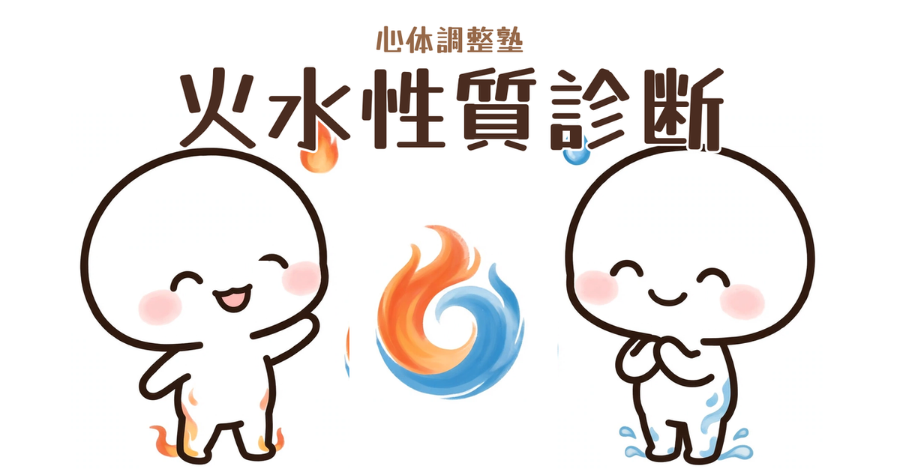
全26ページ（試作 v1）・スクロールして読めます

1 / 26
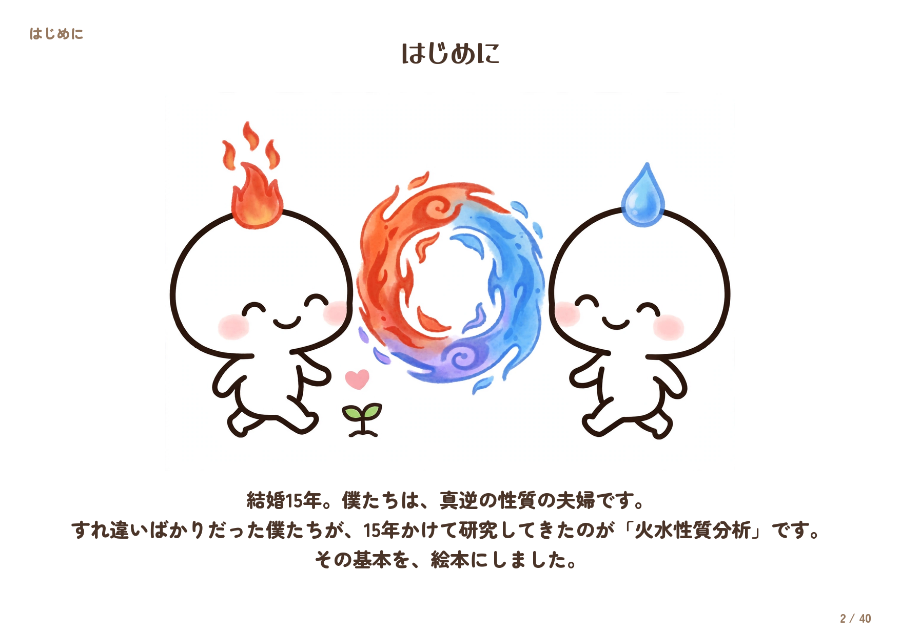
2 / 26

3 / 26
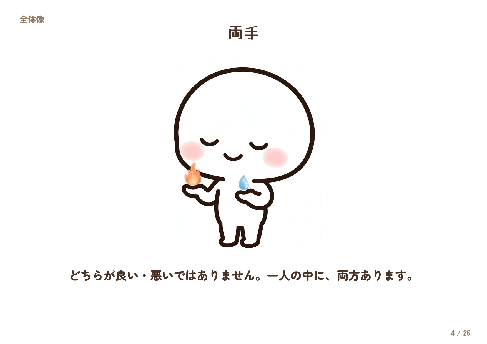
4 / 26
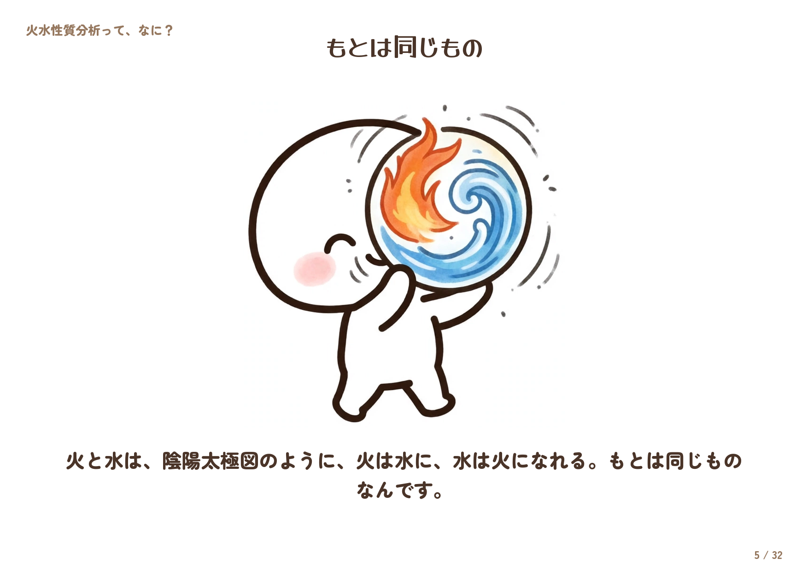
5 / 26

6 / 26
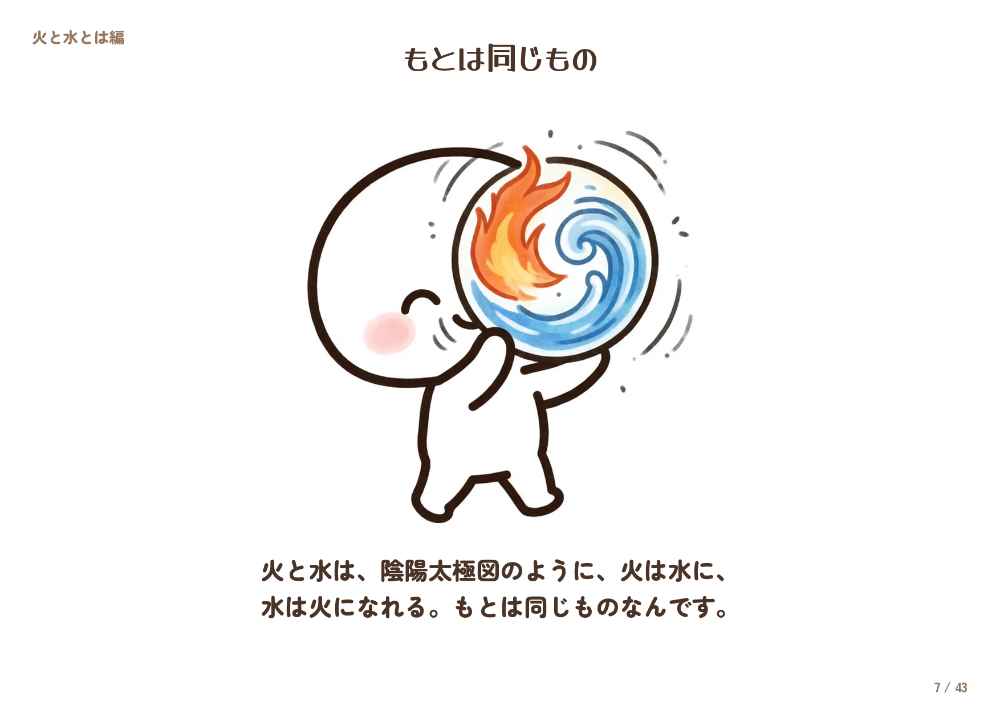
7 / 26

8 / 26
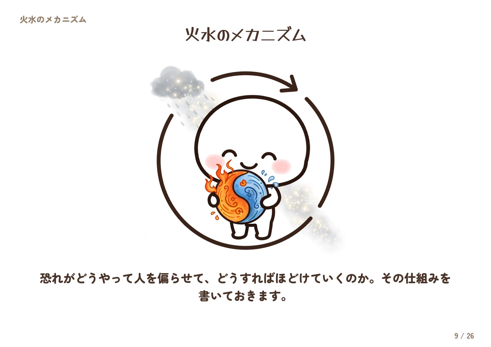
9 / 26

10 / 26

11 / 26
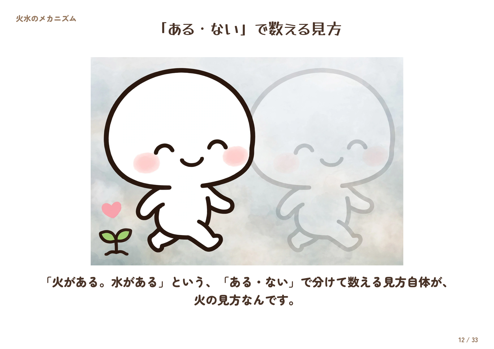
12 / 26
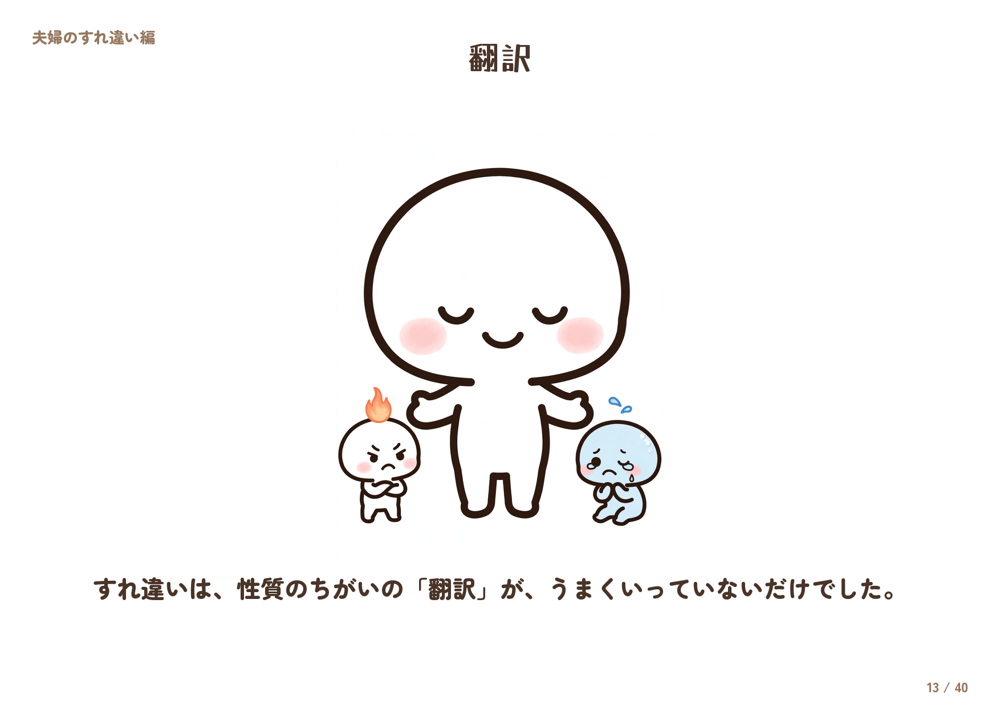
13 / 26

14 / 26
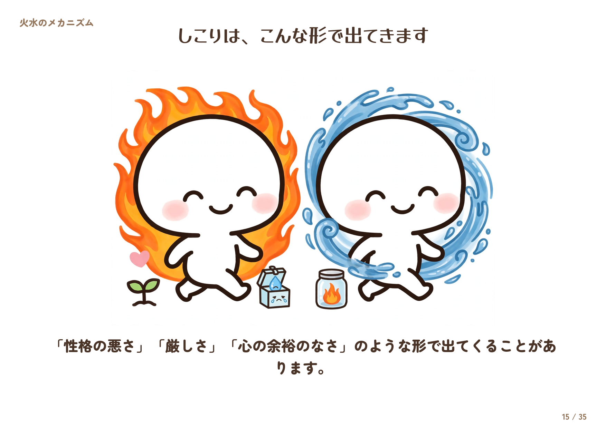
15 / 26

16 / 26

17 / 26

18 / 26

19 / 26
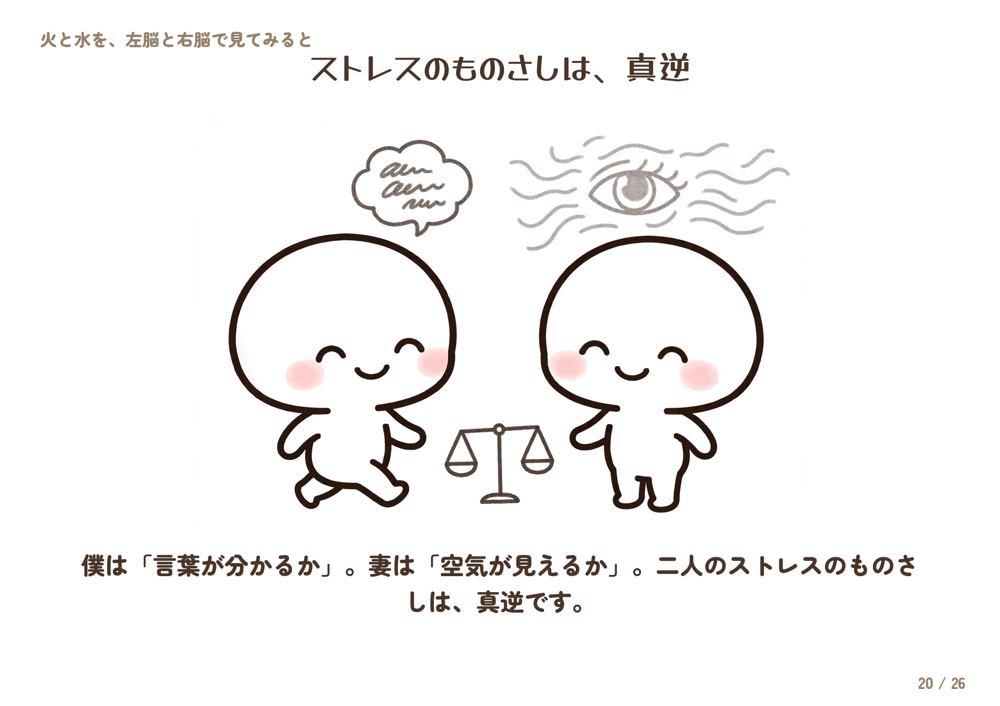
20 / 26
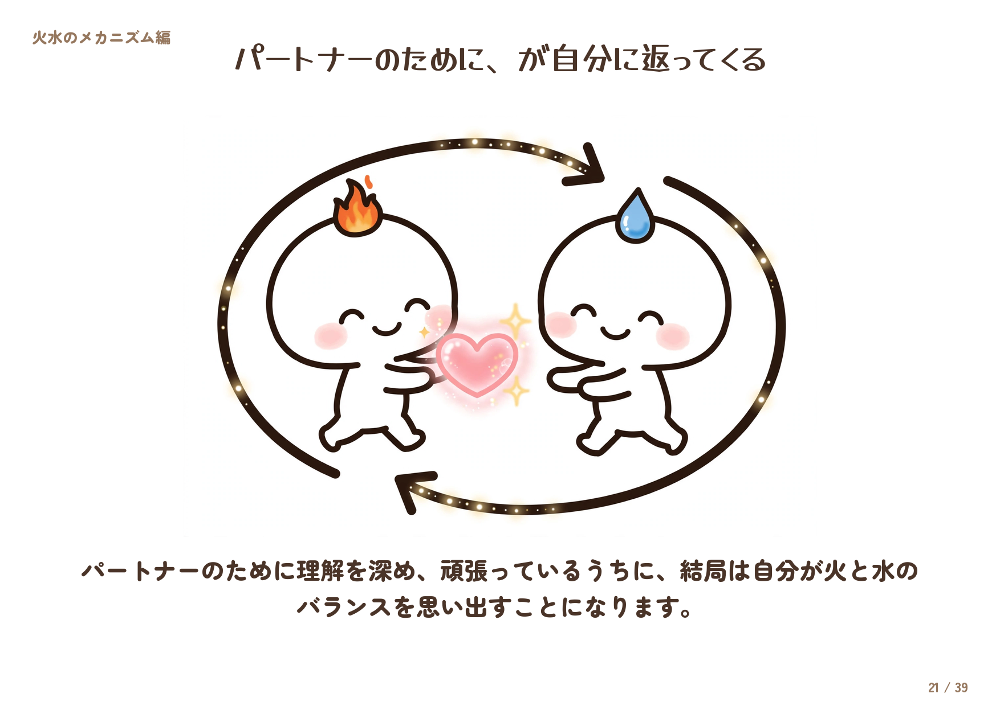
21 / 26

22 / 26
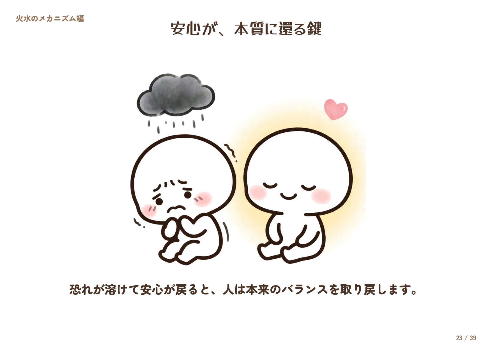
23 / 26

24 / 26

25 / 26

26 / 26
手元に置く版について
プリントアウトすれば、手元に置いて、いつでも手に取れます。後ろには、手書きのメモページもつけました。感じたことを、そのまま書き込んでください。
水の人の整理にも、おすすめです。頭でかかえるより、紙に書いて整理してみましょう。
- 印刷できるPDF版
- 夫婦で書き込むワークシート（お互いの性質・最高交差点）
- 追加のメモページ（印刷用）
- 壁紙・塗り絵データ
手元に置く版（印刷用PDF＋特典）のご案内は、準備ができ次第ここに載せます。価格は未定です。